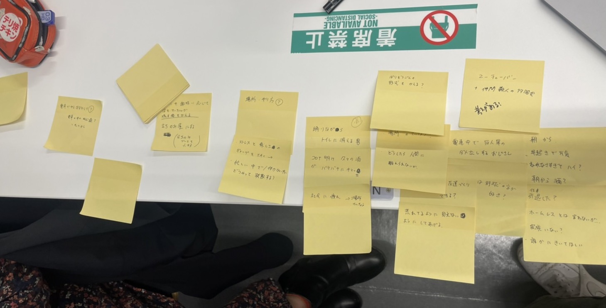

グループワーク
選んだ人物①：電車の中で虚空に向かってひたすら巨人軍の批判をするおじさん
選んだ人物②：一人踊りながら居酒屋のトイレに消えていった男
POVの作業中の写真
人物①のPOV
おじさんは単純に熱中する野球の話をしたかっただけでなく、
何かしらの理由（リタイア？家族問題？）で一人寂しくしていて、不特定多数の人が乗る電車内で野球への不満を放ちながら、誰かに話を聞いてもらいたかったのではないか。
人物②のPOV
コロナ自粛明けの久しぶりの飲み会がとてつもなく楽しかったor日頃の社会生活上のストレスが爆発したor
その日とんでもなく嬉しいことがあったのではないか。
HMWの画像

プロトタイピング
※人物①はアイデアが浮かばず、保留
人物② プロトタイプ１ ミラーボールコースター
STLファイルは
こちら
居酒屋でジョッキを置くコースターを作成した。
目的：お酒の場でよりテンションを上げてあげられるようにする。日頃の疲れを吹き飛ばして、より楽しくなってもらう。
説明：ドリンクをおかわりする度にジョッキをコースターから外すと「Let's have a ball!!（楽しもう）」の文字が見えるようになる。
デザインもミラーボールっぽくしてパーティー感を増した。
課題：色をつけたらよりパーティー感が増すかも。
人物② プロトタイプ２ 取り付け型ミラーボール
STLファイルは
こちら
※（2021.11.11）出力中→11.12早朝完成予定
トイレの電球に取り付ける電球カバーを作成した。
目的：トイレに踊りながら入るくらいなので、いっそトイレをダンスホールにしてあげる。
説明：ただの電球にこのカバーを取り付けるとミラーボールっぽく光が拡散する。
課題：カバーが回るようにしたら、さらにミラーボール感が増すかも→どのように回す？
前の画面に戻る